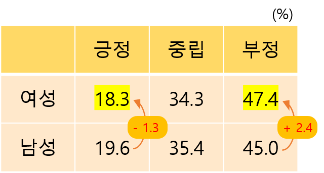

ANALYSIS
아래의 분석 결과에서 '여성'은 '여성','여자'의 검색 결과를 의미하고 '남성'은 '남성','남자'의 검색 결과를 의미합니다.
여성은 기사 속에서 긍정적으로 언급될까 부정적으로 언급될까?
(검색 건수)



기사의 어느 카테고리에서 여성과 남성이 가장 많이 언급될까?
'여성'은 연예 카테고리를 제외한 세계, 정치, IT과학, 생활문화, 경제, 사회 카테고리에서 '남성'보다 큰 비율로 언급되었습니다.
'남성'은 연예 카테고리에서 가장 많이 언급되었습니다.
각 카테고리에서 여성의 긍정적, 부정적 언급 비율은?
각 카테고리에서 남성의 긍정적, 부정적 언급 비율은?
여성 남성 긍정적 언급 연도별 추이 (%)
남성의 긍정적 언급이 여성에 비해 대체적으로 많은 것을 알 수 있습니다.
여성 남성 부정적 언급 연도별 추이 (%)
여성의 부정적 언급이 남성에 비해 대체적으로 많은 것을 알 수 있습니다.
결론
수집 데이터
- 네이버 2005년도 ~ 2019년도 카테고리별 랭킹뉴스
- '여성, 여자, 남성, 남자'가 포함된 기사 2000년도 ~ 2019년도 데이터
사용한 툴
-
데이터 분석 : pandas, numpy, torch, sklearn
데이터 수집 : beautifulsoup
-
협업 : github
시각화 : seaborn, matplotlib, pygal